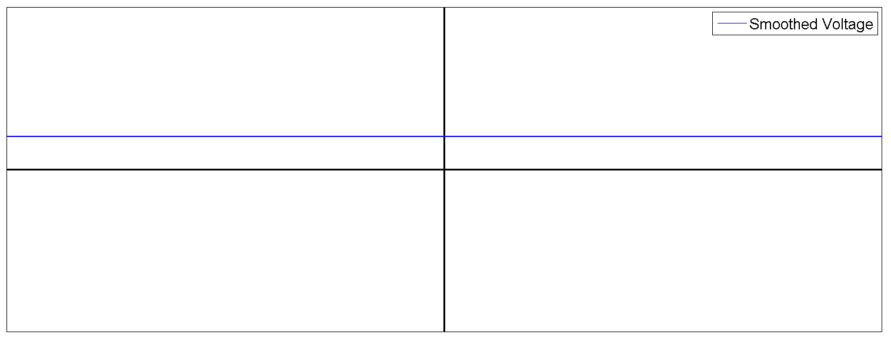

The most common way electricity is generated is by an electrical generator; this involves rotating a loop of wire between two magnets. The loop is rotated mechanically (by wind, water, or another means), and its interaction with the magnetic field causes an alternating current to flow through the wire.
The frequency of the current is how often the alternating current switches directions along the wire. This corresponds to a full rotation of the loop of wire between the magnets. What is the most common frequency for alternating current in the US?
A : 10 Hz
B : 60 Hz
C : 180 Hz
D : 240 Hz
The voltage of the current is dependent on the number of electrons that are moving through the wire (this is what we mean when we say the current). It also depends on the resistance of the wire – how easily do the electrons pass by the other atoms in the wire? The strength of the magnetic field also affects the strength of the current. What is the most common voltage for alternating current in the US?
A : 10 V
B : 120 V
C : 240 V
D : 300 V
Plot the voltage (voltage on the y-axis, time on the x-axis) for a typical alternating current source in the US. An example would be the socket in the wall.

Alternating current is the most common source of electrical energy in the US. However, imagine trying to charge a battery using alternating current.

A battery has a buildup of positive charges on one side, and negative charges (electrons) on the other side. An alternating current would switch the directions of electrons rapidly – electrons couldn’t build up on one side of the battery if they were constantly being pushed back and forth down the length of the wire. So, to charge a battery – say, the battery in your iPad or laptop – we need to convert alternating current to direct current.
Direct current has the electrons flowing in one direction down the wire, which makes it possible to charge a battery. Your laptop charger converts alternating current to direct current. There are three main steps to changing alternating current to direct current. We will explore them below.
Look back at the graph you generated earlier for voltage. The voltage goes positive, then negative, then positive again. A rectifier is the part of the battery brick that takes the negative parts of the graph and either removes them, or flips them up and makes them positive. Both possibilities are graphed below.


(a)

(b)
What is the function that defines possibility (a) above?
Laptop chargers don’t need the full voltage provided from the outlet – they require a lower voltage in order to power your laptop. The typical laptop needs around 20 volts to run. Your laptop charger lowers the amplitude of the voltage from its original value down to a lower value. This is shown below.

What function describes this resulting voltage?
The last step required is the smoothing of the periodic function. Direct current would be a constant, horizontal line on the voltage vs. time graph; we have removed the negative portions of the graph and lowered the max voltage to a suitable value, but we still have a periodic function. A laptop charger is able to smooth out the periodic aspect of the voltage function.

Now the laptop receives a smooth, constant voltage!
Made it!
Click right to return to the first page of this question.